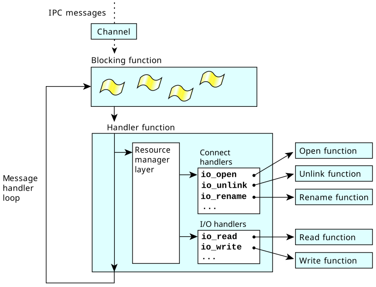
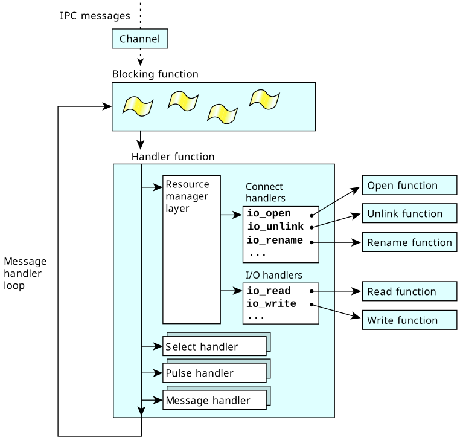

A resource manager is composed of some of the following layers:
- thread pool layer (the top layer)
- dispatch layer
- resmgr layer
- iofunc layer (the bottom layer)
Let's look at these from the bottom up.
The iofunc layer
This layer consists of a set of functions that take care of most
of the POSIX filesystem details for you—they provide a POSIX personality.
If you're writing a device resource manager,
you'll want to use this layer so that you don't have to worry too much
about the details involved in presenting a POSIX filesystem to the world.
This layer consists of default handlers that the resource manager library uses
if you don't provide a handler.
For example, if you don't provide an io_open handler,
iofunc_open_default()
is called.
The iofunc layer also contains helper functions that the default handlers call.
If you override the default handlers with your own, you can still call these helper functions.
For example, if you provide your own io_read handler, you should call
iofunc_read_verify()
at the start of it to make sure that the client has access to the resource.
The names of the functions and structures for this layer have the form iofunc_*.
The header file is <sys/iofunc.h>.
For more information, see the QNX OS
C Library Reference.
The resmgr layer
This layer manages most of the resource manager library details. It:
- examines incoming messages
- calls the appropriate handler to process a message
The names of the functions and structures for this layer have the form resmgr_*.
The header file is <sys/resmgr.h>.
For more information, see the QNX OS
C Library Reference.
Note:
Be sure to #include <sys/iofunc.h> before
<sys/resmgr.h>, or else the data structures won't be defined properly.
Figure 1. You can use the resmgr layer to handle _IO_* messages.

The dispatch layer
This layer acts as a single blocking point for many different types of things.
With this layer, you can handle:
- _IO_* messages
- It uses the resmgr layer for this.
- Select
- Processes that do TCP/IP often call
poll()
(historically this was
select(),
and our support in the resource manager framework is named for this, but it's actually built on top of
ionotify()
here)
to block while waiting for packets to arrive, or for there to be room for writing more data.
With the dispatch layer, you register a handler function that's called instead.
The functions for this are the select_*() functions.
- Pulses
- As with the other layers, you register a handler function that's called when a specific pulse arrives.
The functions for this are the pulse_*() functions.
- Other messages
- You can give the dispatch layer a range of message types that you make up, and a handler.
So if a message arrives and the first few bytes of the message contain a type in the given range,
the dispatch layer calls your handler.
The functions for this are the message_*() functions.
Figure 2. You can use the dispatch layer to handle _IO_* messages, select, pulses,
and other messages.

Here's how messages are handled via the dispatch layer (or more precisely, through
dispatch_handler()):
-
A search is made, based on the message type or pulse code, for a matching function that was attached using
message_attach() or
pulse_attach().
If a match is found, the attached function is called.
-
If the message type is in the range handled by the resource manager (I/O messages)
and pathnames were attached using
resmgr_attach(),
the resource manager subsystem is called and handles the resource manager message.
-
If a pulse is received, it may be dispatched to the resource manager subsystem
if it's one of the codes handled by a resource manager (UNBLOCK and DISCONNECT pulses). If you called
select_attach()
and the pulse matches the one it used, then the select subsystem is called and dispatches that event.
-
If a message is received and no matching handler is found for that message type, but a default handler was registered,
call the default handler.
- If a message with an unmatched message type is received, and no default handler was registered, then call
MsgError(ENOSYS) to unblock the sender with an error.
The thread pool layer
This layer allows you to have a single- or multithreaded resource manager.
This means that one thread can be handling a
write()
while another thread handles a
read().
You provide the blocking function for the threads to use
as well as the handler function that's to be called when the blocking function returns.
Most often, you give it the dispatch layer's functions.
However, you can also give it the resmgr layer's functions or your own.
You can use this layer independently of a resource manager, as a general-purpose dynamic thread pool implementation.